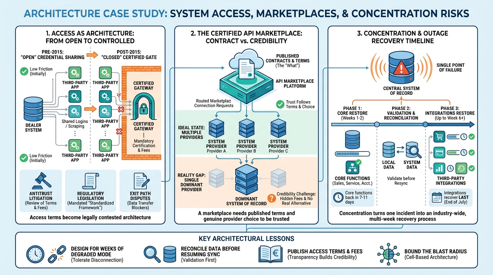

Part X — PRACTICE: How Others Built It
CDK Global: The DMS as Platform, Gatekeeper and Single Point of Failure

Image generated by Google Gemini (gemini-3-pro-image-preview)
Part X — PRACTICE: How Others Built It

Image generated by Google Gemini (gemini-3-pro-image-preview)